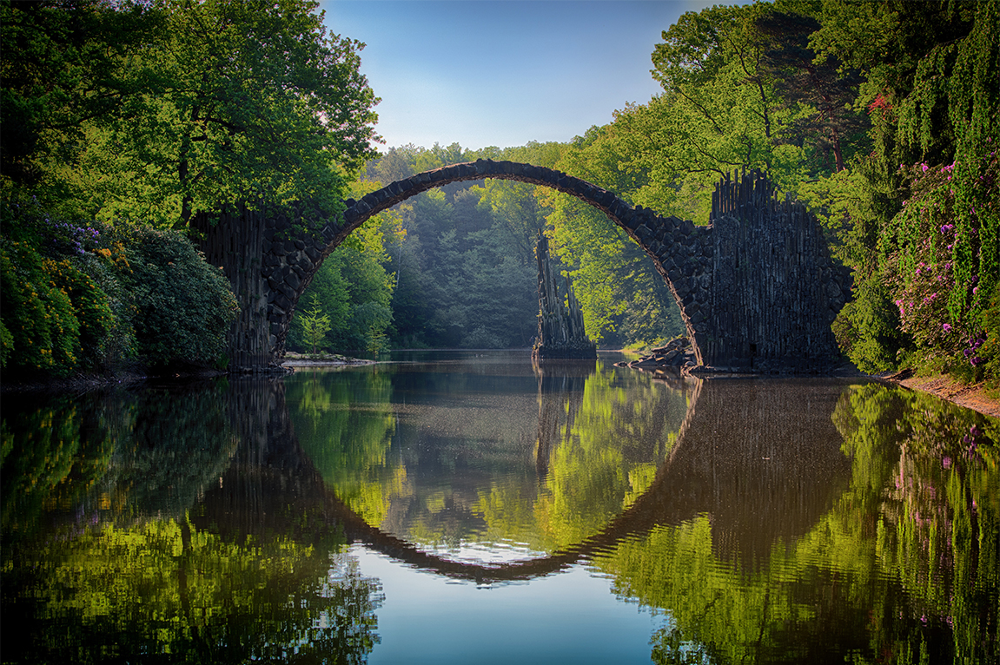
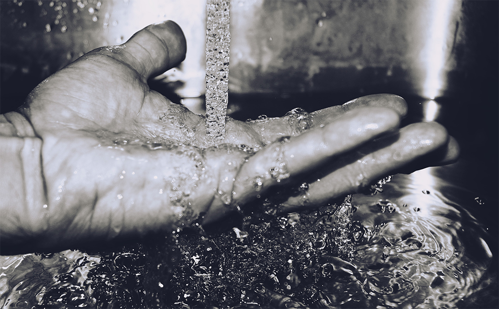

Meio Ambiente
O que é Meio Ambiente ?
É tudo que está na natureza
Tudo aquilo que é vivo e serve de sustento à vida.

O projeto não é sobre água? Por que você esta dizendo sobre meio ambiente ?
Calma la meu caro, o meio ambiente e um dos fatores mais importantes que existe é nele que existe tudo aquilo que precisamos para viver , como eu ja disse ali encima.
Nele podemos encontrar tudo o que é vivo como : Animais, plantas, pessoas, solo, o clima e o nosso foco principal que é a água.
- Água que é utilizada para banho;
- Que é usada para cozinhar alimentos;
- O bem mais precioso do nosso mundo que infelizmente por diversos fatores acaba sendo um recurso escasso.
Ja sabemos então que a água e um dos bens mais preciosos do mundo e entao é por este motivo, que devemos saber como preservar-la, pois, se trata de um recurso esgotável, e assim é necessário ter um cuidado especial, para que possamos usufruir deste recurso tão indispensável na nossa vida. Sabemos também que a água é utilizada para milhares de coisas, e uma delas que irei citar aqui é uma maneira que me chamou bastante a atenção.
Más que maneira é esta que você esta falando?
Hehe ficou curioso né ? Bom é uma jeito bem legal que utilizam a água é o método feito no tratamento dela tanto quando ela chega na sua estação de tratamento (ETA) tanto quando ela vai para estação de tratamento de efluentes (ETE).

Estação de Tratamento de Água (ETA)
Estação de tratamento de água ou também abreviado como ETA é um local em que realiza a purificação da água captada de alguma fonte para torná-la própria para o consumo.
Estação de Tratamento de Efluentes (ETE)
O objetivo de uma ETE é tratar o efluente para que possa atender os parâmetros previstos na legislação. Para se chegar a uma ETE adequada, é preciso conhecer não apenas a composição do efluente como também a classificação do corpo d’água em que será descartado.
Efluente
Efluente é o resíduo líquido resultante de processos industriais. Na química, define-se dois tipos de efluentes líquidos: os gerados na planta, a partir de processos como reações, separações ou reciclos e os usados como utilidades, como águas de lavagem, resfriamento etc.
Senso de Preservação Ambiental
"Ta você falou de varios métodos ali más oque é este senso de preservação?" Bom respondendo sua pergunta o senso de preservação engloba todos aqueles métodos ali é ele que atende as necessidades do presente sem comprometer as gerações futuras, atendendo as necessidades de preservação, todos os métodos citados se englobam no senso de preservação.

O Projeto
A idéia do projeto foi criada após eu reparar sobre o consumo d' água em todos os lugares que vamos.
"Sim más porque logo o método de captação de água que você nos deu o exemplo?".
Esse método e um dos mais importantes para abastecimento de um municipio para que todos tenham água em sua residencia, e eu como vi na empresa que eu trabalho as estações resolvi falar sobre isso para todos, pois e uma maneira muito interessante de se consumir a agua. (Lembrando também que quase ninguem sabe como é feito tudo isso).

Sistema de Gestão Ambiental
Com a politica ambiental temos processo que inciam com o Planejamento que segue vindo após isso a Implementação e Operação, a Verificação e Ação Correttiva, Análise Crítica pela Alta Administração para chegar na Melhoria Contínua.
Isso tudo foi realizdo para podermos cuidar do nosso meio ambiente é claro que esse sistema é integrado em um certificado chamado ISO 14001
A empresa em que eu peguei como referencia é a Santista Work Solution de Tatuí - SP que possui todo esse cuidado com a água e o meio ambiente para que tudo saia em conformidade e fique dentro da lei!

A empresa Santista Work Solution
É compromisso da Santista compatibilizar as suas atividades com a conservação do meio ambiente, dentro dos princípios do desenvolvimento sustentável.
Isso tudo para podermos previnir os aspectos ambientais que sofram algum impacto que danifique nosso meio ambiente.
Os objetivos e metas ambientais são formalizados nos planos de ação das áreas envolvidas, de acordo com o Sistema de Gerenciamento pelas Diretrizes da empresa.
Vantagens
As vantagens de tudo isso é: O equilíbrio entre o desenvolvimento econômico e preservação ambiental melhorando a qualidade de vida..
Mude o Mundo
Pequenas açôes individuais são a maior força transformadora que se conhece. Ter uma atitude consciente em relação aos nossos hábitos de consumo é a melhor (e talvez a única) maneira de se mudar o mundo. Economize água,luz, recicle seu, faça a sua parte e ajude a construir um futuro para todos!

Water Pulse
Gostou do conteudo ? Quer saber um pouco mais ou entrar em contato para conversamos sobre o projeto ? Mande uma mensagem ou me siga nas redes sociais!
Rua Professor Euchario Holtz Nº 287 - São Cristóvão
Tatuí, SP 18279-070
kaique.oliveira03@hotmail.com
+55 15 998332760